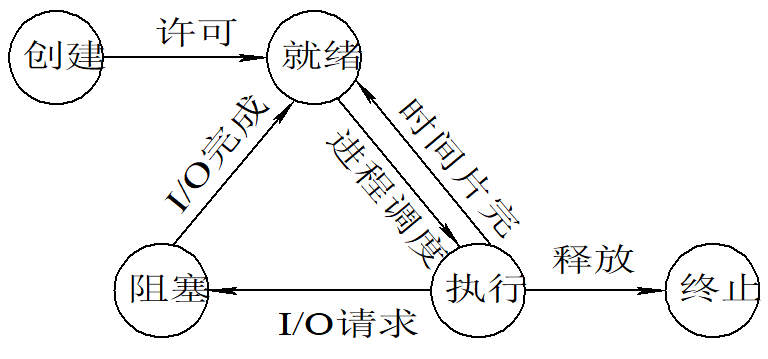

linux进程和内存概念
Linux进程
进程（Process）：执行中的程序
- 在 Linux 中，进程可以理解为程序的一次动态执行过程，占用特定的内存空间一个进程体现为 /proc 下的一个目录，每个进程独立运行
- 进程由程序、数据和进程控制块三部分组成
- 每个进程都有一个 PID 号，对应 /proc 目录下的每个数字
1 | |
进程具有的特征：
动态性：进程是程序的一次执行过程，是临时的，有生命期的，是动态产生，动态消亡的；
并发性：任何进程都可以同其他进程一起并发执行；
独立性：进程是系统进行资源分配和调度的一个独立单位；
结构性：进程由程序、数据和进程控制块三部分组成。
进程状态：一个进程从创建到终止一般会经历五个状态：
- 创建状态：进程在创建时需要申请一个空白PCB（进程控制块），向其中填写控制和管理进程的信息，完成资源分配
- 就绪状态：进程已经准备好，已分配到所需资源，只要分配到CPU就能够立即运行
- 执行状态：进程处于就绪状态被调度后，进程进入执行状态
- 阻塞状态（暂停状态）：正在执行的进程由于某些事件（I/O请求，申请缓存区失败）而暂时无法运行，进程受到阻塞。在满足请求时进入就绪状态等待系统调用
- 终止状态：进程结束，或出现错误，或被系统终止，进入终止状态。无法再执行

主进程
centos中linux第一个进程是systemd，所有的父进程都归systemd管
父进程
运行一个程序就会出现一个进程，这个进程就是父进程，所有的父进程归主进程(systemd) 管，父进程不处理具体的业务
子进程
父进程会产生一个或多个子进程来处理请求和业务，待子进程处理完成任务后，关闭子进程，回收分配给子进程的系统资源 (cpu，内存….)
僵尸进程
僵尸进程是一个不好的进程，也不处理业务，也不告知父进程回收系统资源。僵尸进程可以通过关闭父进程来间接的关闭僵尸进程。
孤儿进程
也是一个不好的进程，父进程故障了，子进程无父进程管理，由systemd主进程直接接管
守护进程
持续运行的进程，一般是系统必须运行的服务，例如: network和sshd服务
线程
线程（Thread）：进程划分成的更小的运行单位，是操作系统能够进行运算调度的最小单位
- 同一进程下的各个线程之间共享程序的内存空间（包括 CPU、Date 等）
- 同一进程下的各个线程之间共享进程资源（如打开文件和信号）
Linux内存
一般来说，一个程序或者服务在运行的时候，会生成一个或者多个进程，而进程就是运行在内存中的
Linux 中内存分为物理内存和虚拟内存：
- 物理内存：物理内存条而获得的内存空间
- 虚拟内存：“使用硬盘空间来扩展内存”，通过虚拟内存可以让程序可以拥有超过系统物理内存大小的可用内存空间；虚拟内存为每个进程提供了一个一致的、私有的地址空间，它让每个进程产生了一种自己在独享主存的错觉（每个进程拥有一片连续完整的内存空间）
进程使用内存问题：
- 内存泄漏（Memory Leak）：动态开辟的空间，在使用完毕后未释放，结果导致一直占据该内存单元
- 内存溢出（Memory Overflow）：指应用系统中存在无法回收的内存或使用的内存过多，最终使得程序运行要用到的内存大于能提供的最大内存
- 内存不足（Out Of Memory）
本博客所有文章除特别声明外，均采用 CC BY-SA 4.0 协议 ，转载请注明出处！